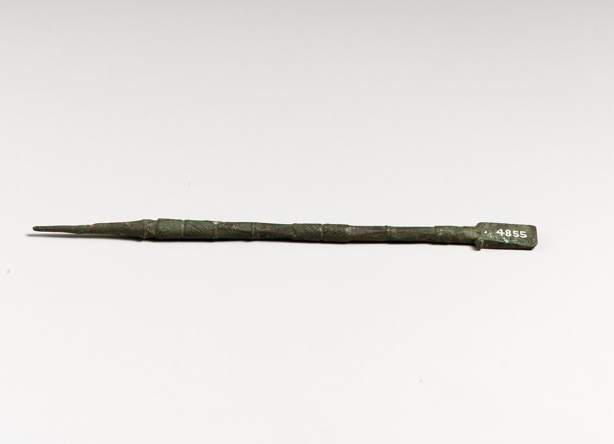
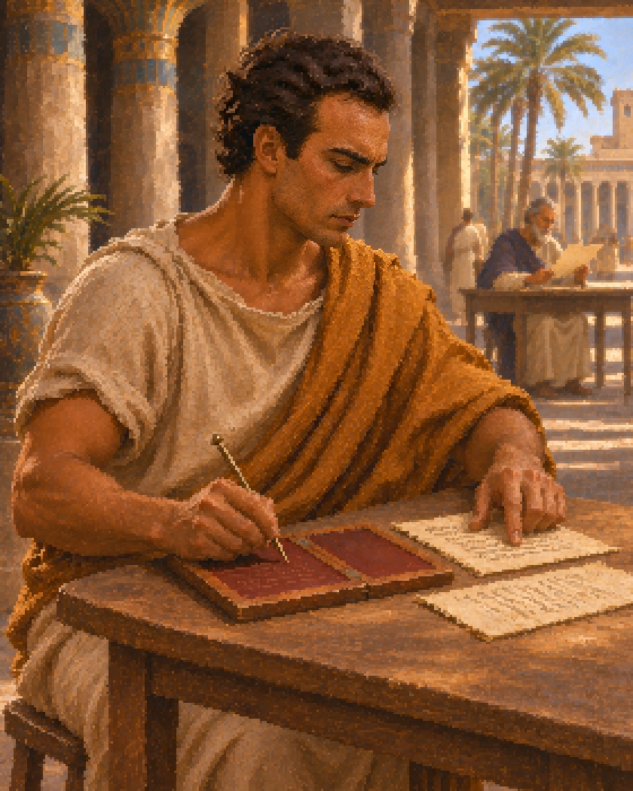
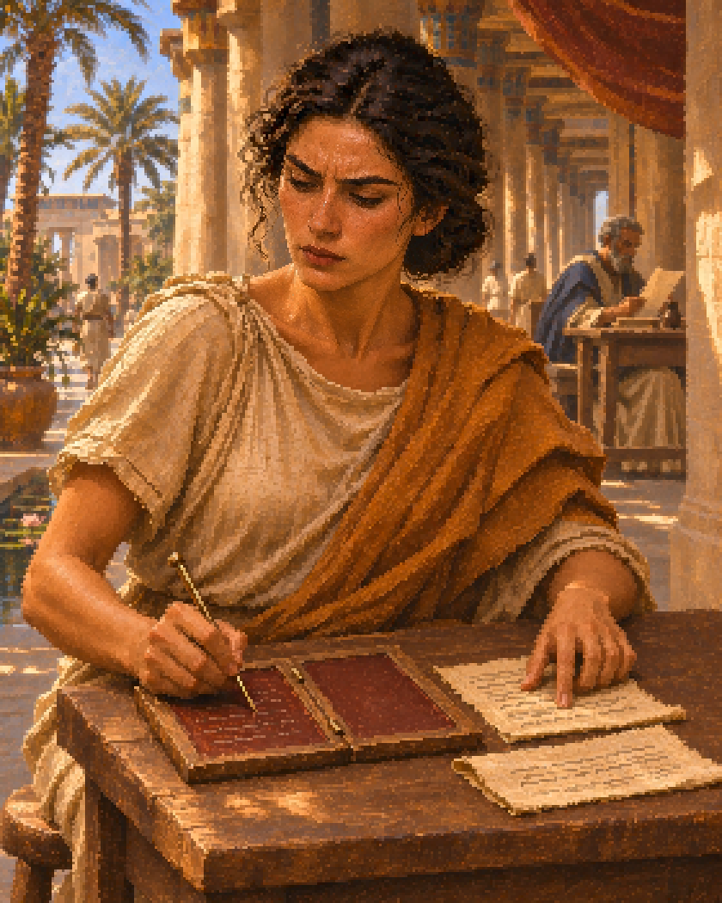

Common rank: supervised record checking. The new art replaces the courier action while retaining the approved characters and the set's painterly pixel finish.

Authentic reference, unchanged photograph. The Met, Bronze stylus, Cypriot, 4th–1st century BCE, 74.51.5495. Public domain. Informs the writing function and wax-tablet tool; the generated terminal is an interpretation. Museum record.

Generated male variant. Seated at a modest desk, comparing a papyrus record with a wax tablet; gaze directed toward the work.

Generated female variant. Matching supervised administrative duties and Common status. This paired game role is a creative interpretation.
Historical evidence and chronological limits are recorded in references/credits.md. Actual generation prompts, paintings and PixelOE QA are retained alongside the final art.